General Knowledge
Positions
Terms
Hand Ranks
Helpful Tips
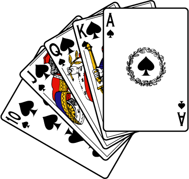
Basics of Poker
The Basic Rules and Guidelines of Texas Holdem Poker
General Knowledge
Most poker games use a standard 52-card deck of playing cards. There is no national or international regulating organization for the game of poker; the rules are simply passed down through tradition and experience. Knowing the standard poker rules gives you a good foundation, but there are dozens of house rules that may be in effect, depending on where you play. If you're playing in a major tournament at a casino, the casino's rules apply.
Make sure you know the house rules where you plan to play, and don't be afraid to ask -- before you buy-in. Although the days of poker players getting shot over a big pot are for the most part behind us, it's still a bad idea to violate a house rule at the table.
In most poker games, money is traded in for chips before the game starts. The chips are what the players are actually putting into the pot and at the end of the game, they can trade their chips for money ("cashing out").
Positions
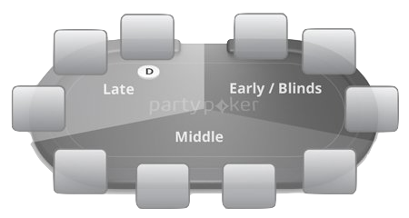
The first thing you should look out for when you sit down at a poker table is the dealer button. This is a small white disc that indicates who the dealer is. Knowing where the dealer button is will let you work out your own table position (where you are in the betting order).
Don't worry about getting a bad seat though because the dealer button moves each hand.
The action moves clockwise round the table. Players often choose slightly different strategies depending where they sit. The basic idea is simple. For the most part, play strong hands in early position, good hands in mid-position and a few more hands in late position.
Early Position
To the left of the dealer, the first two seats are called the small blind and big blind. They start the betting with a fixed amount to get the action going. Blinds are commonly used in a tournament/casino setting, you may play games where each player places a bet before the hands are dealt, known as an "ante"
The player to the left of the big blind is called 'under the gun', as they’re the first to act. Depending on the number of players, this and the next seat are known as ‘early position’. These seats are the hardest to play because you have no idea what anyone else is going to do.
Therefore, in theory, you should only play the very best hands (pair of two 10s or higher, ace-king or ace-queen).
Middle Position
The next couple of seats are relatively good spots, as you get to see what the first players are up to. In the next seat, sometimes called hijack (and a sort of halfway house between middle and late position), you should raise with any pair.
Late Position
Late position (the cutoff and button) are the best seats in poker, as you’ve had the chance to see what everyone else is doing. If everyone else has folded, you can have an average hand and still ‘steal the blinds’ (win the pot straightaway). In this position you can raise with a lot more cards, like any ace where the other card is of the same suit.
Terms
- Ante - Ante is a bet placed by all players before a hand is dealt. It is the "cost" of being able to play in that hand.
- All-in - betting all your chips
- Bet - To bet is to put money into the pot.
- Blind - Sometimes used instead of an ante, this is a bet placed by the player sitting to the left of the dealer before the hand is dealt.
- Bluff - Bluffing is when a player bets aggressively even though he has a weak hand, in an attempt to get the other players to fold.
- Burn - The discarding of the top card before the flop, turn, and river
- Buy-in - The buy-in is the amount of money needed to enter a poker game.
- Call - To call is to place into the pot the amount needed to match the previous bets made for that betting round. For example, if the player to your right bets $10, to stay in that hand you need to "call" his bet by placing $10 in the pot.
- Check - A check is a bet of nothing. If no bets have been made during the current betting round, the player whose turn it is to bet can bet nothing, and pass the opportunity to bet to the player to her left. If everyone checks all the way around the table, the betting round ends.
- Fold - To fold is to drop out of the hand because you don't think your cards are good enough to win. When you fold, you don't put any more money into the pot, and you forfeit any chance at winning it.
- Flop - The first three community cards dealt out after the first round of betting is complete.
- Hand - A hand is a combination of cards, usually five, that is compared to the other players' hands to see who wins. The word hand is also used to mean a single round of poker.
- Kicker - If you have the same hand as another player at showdown, the one with the highest card completing a five-card hand wins the pot.
- Pot - The pot is the prize for a hand of poker. The pot is made up of the antes or blinds, plus all the bets made during that hand. At the end of the hand, the player with the best hand (or the last player still in the hand, if everyone else folds) wins the pot.
- Raise - To raise is to increase the amount of the bet for the current betting round, after another player has already placed a bet. For example, the player to your right bets $10. You can call her $10 bet, and then raise it another $10. You would therefore place $20 into the pot. Players to your left would have to call the total bet of $20 to stay in the hand. They could also raise it another $10. In this case, when the bet came around to you again, you'd have to put $10 in the pot to call and stay in the hand.
- River - The final of the five community cards. Also known as "Fifth street."
- Short Stack - Having fewer chips than the rest of the players at the table or in the tournament.
- Showdown - The showdown is the end of the hand, when all remaining players show their cards to see who has the best hand.
- Side Pot - Separate from the main pot. If one or more players is all-in, the pot to which the all-in players contributed is the main pot. A side pot is created from any additional money bet by the remaining players.
- Straddle - An optional pre-deal bet, typically made by the player to the left of the big blind. The straddle amount is twice the big blind (same as a legal raise). The straddler earns the "option" from the big blind. He may re-raise when the action comes around to him. A straddle is a cash game convention and is not usually permitted in a tournament.
- Turn - The fourth community card. Put out face-up, by itself. Also known as "Fourth Street."
Hand Ranks
From Strongest to Weakest
| Royal Flush | This hand contains five cards, ace high straight (A-K-Q-J-10), all the same suit |
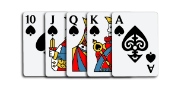 |
|---|---|---|
| Straight Flush | This hand contains five cards in sequence, all the same suit | 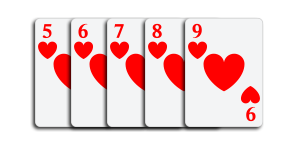 |
| 4 of a Kind | Four cards of the same number or face value | 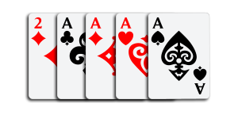 |
| Full House | This hand contains three same-value cards, plus a pair. |  |
| Flush | This hand contains five cards of the same suit | 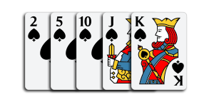 |
| Straight | This hand contains five cards in sequence | 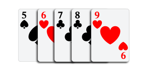 |
| 3 of a Kind | Three cards of the same number or face value | 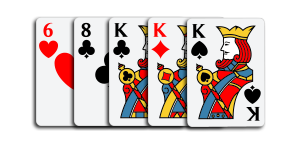 |
| 2 Pair | This hand contains two cards of the same number or face value, plus another two cards of the same number of face value | 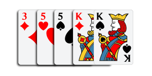 |
| Pair | Two cards of the same number or face value | 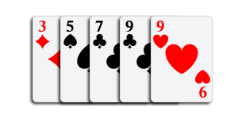 |
| High Card | This hand contains any five cards not meeting the requirements of the hands above | 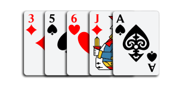 |